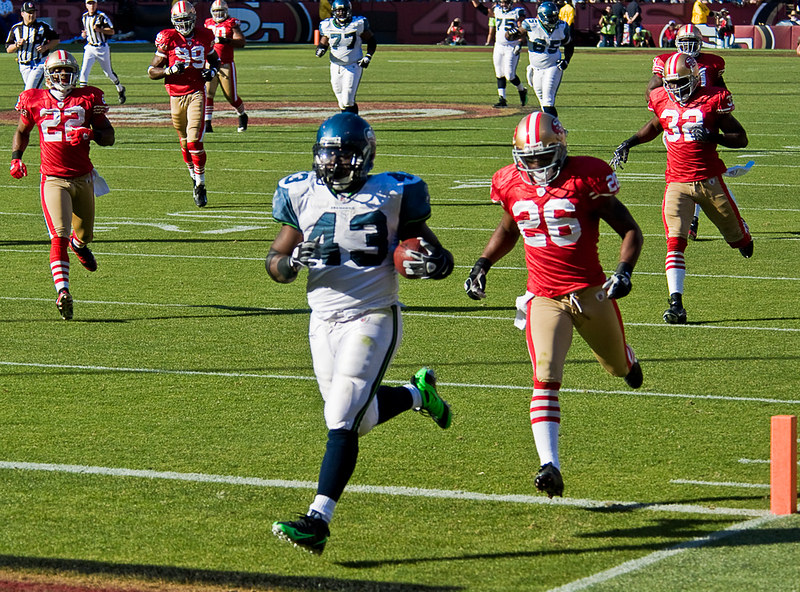

Welcome to PylonIQ
PylonIQ helps fantasy football managers decide who to start, sit, or trade by comparing a player's fantasy points to their EPA. A player with a ton of fantasy points but a low EPA could be a fraud who is just getting lucky, so cash in on our advanced analytics to make better decisions, picks, and trades.
What Is EPA?
EPA (Expected Points Added) measures how much a single play changed a team's chances of scoring. For example, a 20-yard catch on 3rd and 15 adds a lot of expected points, while a 2-yard run on 3rd and 10 takes some away. Average EPA per play is therefore a good measure of how much a player shows up when his team needs him most, even in a week when he doesn't necessarily have a ton of yards or score a touchdown. Fantasy points can jump up or down because of one lucky touchdown, but EPA is a better measure of a player's importance to his OC's scheme, and is a good way to guess who will keep producing and who is due to cool off.
League Leaders
(Sample) Stats through Week 2 of the 2026 season. Pts = average fantasy points per game (in a PPR league).
Top Offenses
Ranked by EPA per play
- San Francisco 49ers 0.21 EPA per play
- Baltimore Ravens 0.18 EPA per play
- New York Giants 0.15 EPA per play
- Buffalo Bills 0.14 EPA per play
- Dallas Cowboys 0.12 EPA per play
Top Offensive Players
Ranked by EPA per play
- Dontayvion Wicks 28.4 pts, 0.41 EPA
- Isaiah Likely 17.3 pts, 0.35 EPA
- Mike Evans 24.7 pts, 0.30 EPA
- Ladd McConkey 20.4 pts, 0.27 EPA
- Jaxon Smith-Njigba 22.6 pts, 0.25 EPA
Top Defenses
Ranked by EPA allowed per play (lower is better)
- Las Vegas Raiders -0.19 EPA allowed
- Cincinnati Bengals -0.15 EPA allowed
- Seattle Seahawks -0.13 EPA allowed
- Jacksonville Jaguars -0.11 EPA allowed
- Minnesota Vikings -0.10 EPA allowed
Top Defensive Players
Ranked by defensive fantasy points per game
- Devin Lloyd 19.5 pts
- T.J. Watt 18.0 pts
- Josiah Trotter 17.5 pts
- Greg Rousseau 15.0 pts
- Byron Murphy 14.5 pts
Top Players by Position
Ranked by fantasy points per game through Week 2 of the 2026 season.
Quarterbacks
Ranked by fantasy points per game
- Lamar Jackson 30.2 pts, 0.20 EPA
- Brock Purdy 28.5 pts, 0.32 EPA
- Josh Allen 27.9 pts, 0.30 EPA
- Dak Prescott 24.4 pts, 0.19 EPA
- Jared Goff 23.8 pts, 0.22 EPA
Running Backs
Ranked by fantasy points per game
- Kenneth Walker III 24.0 pts, 0.18 EPA
- Jahmyr Gibbs 23.5 pts, 0.16 EPA
- Chuba Hubbard 21.2 pts, 0.10 EPA
- Christian McCaffrey 20.9 pts, 0.05 EPA
- Derrick Henry 18.6 pts, 0.29 EPA
Wide Receivers
Ranked by fantasy points per game
- Dontayvion Wicks 28.4 pts, 0.41 EPA
- Mike Evans 24.7 pts, 0.30 EPA
- Amon-Ra St. Brown 23.9 pts, 0.26 EPA
- Denzel Boston 22.8 pts, 0.21 EPA
- Jaxon Smith-Njigba 22.6 pts, 0.25 EPA
Tight Ends
Ranked by fantasy points per game
- Trey McBride 19.8 pts, 0.24 EPA
- Isaiah Likely 17.3 pts, 0.35 EPA
- Dalton Kincaid 15.1 pts, 0.18 EPA
- Mark Andrews 14.6 pts, 0.15 EPA
- Travis Kelce 13.9 pts, 0.12 EPA